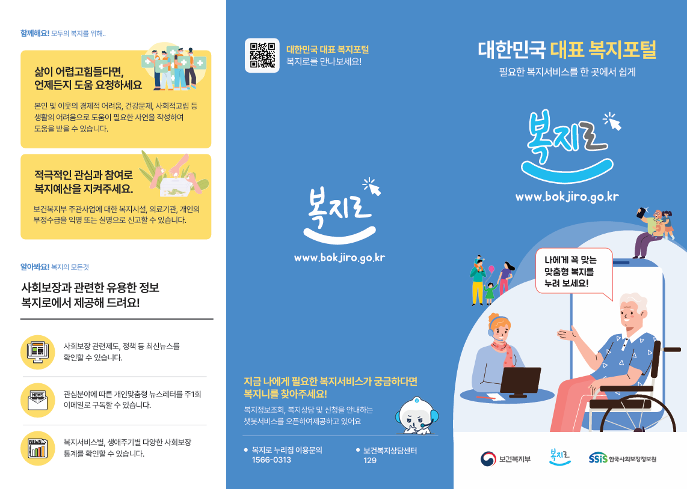
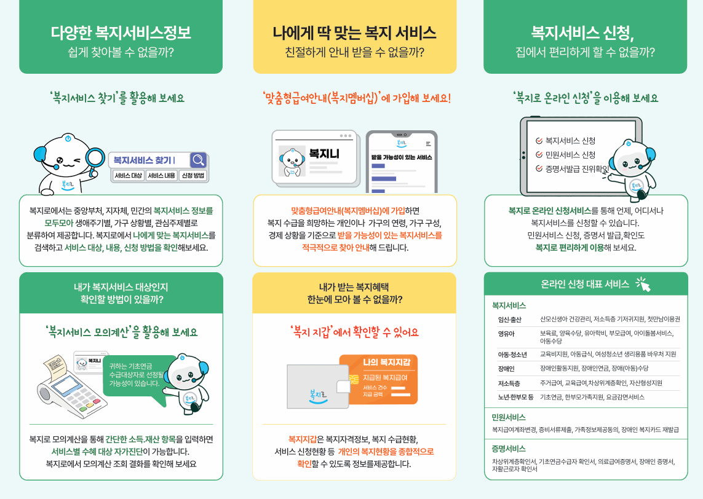

Graphic / Print
복지로 리플렛
Illustrator · Photoshop · 인쇄물


프로젝트 소개
보건복지부 공식 복지 포털 '복지로'를 소개하는 3단 접이식 리플렛입니다. 서비스를 처음 접하는 이용자가 한눈에 이해할 수 있도록 정보를 안내면과 상세면으로 나누어 구성했습니다.
작업 포인트
- 표지에는 QR코드와 핵심 메시지를 배치해 접힌 상태에서도 서비스 목적이 바로 전달되도록 구성했습니다.
- 펼친 내지는 '찾기 · 안내받기 · 신청하기' 3단계 흐름으로 나눠 복지 서비스 이용 과정을 순서대로 안내했습니다.
- 보건복지부 브랜드 컬러(그린·옐로우·블루)를 섹션별로 구분해 사용해 정보 영역을 시각적으로 나눴습니다.
- 공공기관 인쇄물 특성을 고려해 픽토그램과 캐릭터(복지니)를 활용, 텍스트 위주 정보도 쉽게 읽히도록 설계했습니다.